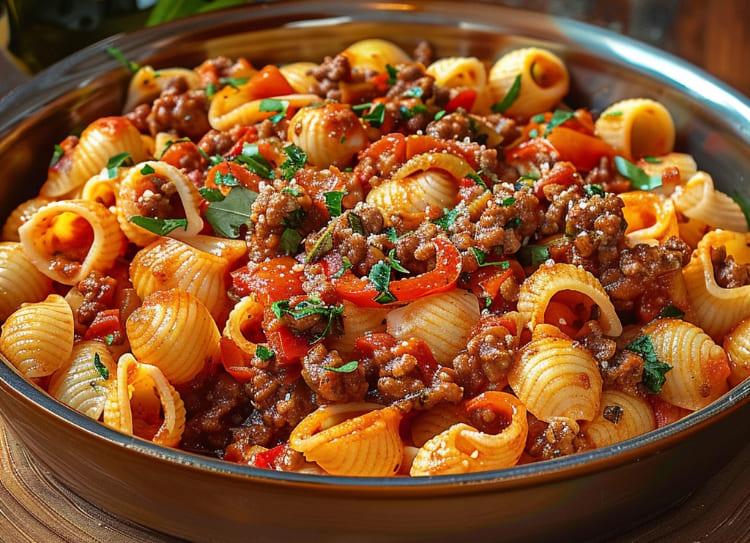

**How to prepare delicious bolognese pasta**

Welcome to our kitchen! Today we will embark on the preparation of an authentic Italian classic: pasta bolognese. In just 50 minutes, and with simple ingredients, you can create a delicious and satisfying dish for 4 people.
We will begin by browning a mixture of beef and pork along with onion, carrot and celery, creating an aromatic base that will give depth to our sauce. These ingredients will cook over low heat, allowing their flavors to merge and intensify. Then, we will add fresh tomatoes, which will provide freshness and balanced acidity to the sauce.
While the bolognese cooks and enriches, we will prepare the pasta so that it is al dente, just as Italian tradition dictates. The combination of the robust sauce and the perfectly cooked pasta will result in a dish full of flavor and texture.
This dish is not only a delight for the palate, but also a fantastic way to gather family or friends around the table. Get ready to enjoy a culinary experience that will capture the essence of Italian cuisine and make every bite a celebration!
INGREDIENTS:
100 gr of Doria shells
Salt and pepper to taste.Bolognese Sauce:
1 tablespoon olive oil
1/2 red onion, diced
1/4 of chopped green onion1/2 cup diced carrot
1.5 lb ground beef2 cloves of garlic4 large tomatoes, peeled and chopped
Basil, oregano and rosemary to taste
Salt and pepper to taste
PREPARATION:
- We cook the Conchas Doria for 12 to 16 minutes in plenty of boiling water (1 litre of water mixed with a teaspoon of salt for every 100 g of pasta), we run them under cold water and drain well.
-
In a pot, cook the halved tomatoes, add rosemary, oregano, basil and pepper. Let it cook and then blend and set aside.
-
In a separate pan with olive oil, sauté the garlic, onion, chopped green onion and carrot and season with salt and pepper.
-
We add the ground beef to the pan and wait for it to cook, then add the tomato sauce.
-
We serve the Doria shells in a bowl, add our Bolognese filling and finish by adding a little grated cheese and ready to enjoy!
Congratulations! You have prepared some delicious Bolognese pasta, now invite your friends to enjoy these delicious pastas.
I hope you like it and learn well from this recipe...